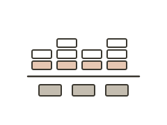
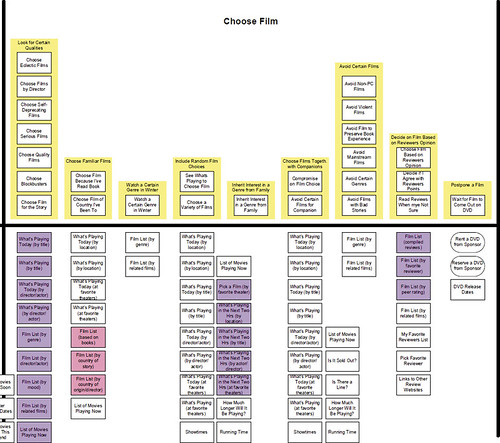
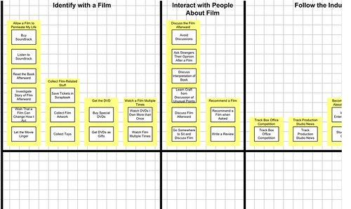

Mental model diagram
About
A mental model diagram, developed by Indi Young, maps what users think and do in relation to a topic or domain — independently of any specific product or interface. The diagram is built from interview data coded into behavioral statements, which are then organized into vertical towers (clusters of related behaviors and thoughts) and grouped horizontally into spaces (broader phases or contexts). Below the horizontal dividing line, the diagram can show how product features or content align — or fail to align — with what users actually need. The diagram reveals gaps: places where users have real needs that no feature currently addresses, and features that exist for which users have no mental model at all.
When to use
Use a mental model diagram before redesigning a complex product or service, especially when the existing design is known to mismatch how users think about the domain. It is also useful for identifying underserved user needs that represent genuine product opportunities.
When not to use
Mental model diagrams require substantial research (typically 15+ interviews) and significant analysis time to produce properly. Do not attempt one for small studies or quick projects. The method is also domain-focused rather than task-focused — it is not a substitute for a journey map when you need to understand a specific user workflow.
References
Examples
Click any example to view full size and visit the original source.

